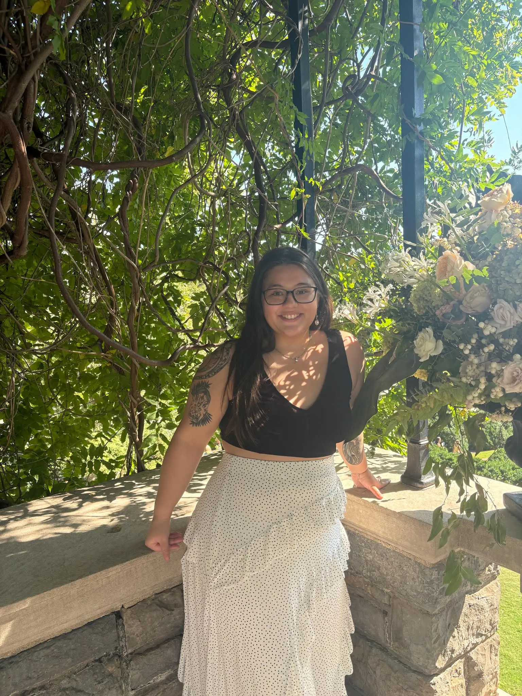

PhD Student | Vanderbilt University
My name is Avery, and I am starting in the Neuroscience Graduate Program at Vanderbilt University in Fall 2026. I graduated from the University of Maryland, College Park in Spring 2024. During undergrad, I gained a passion for language science through my experiences as a research assistant and honors thesis student in the Dr. Jared Novick's Cognition and Language Processing Lab under the direction of Dr. Kelly Marshall and a lab manager in Dr. Nan Bernstein Ratner's Language and Fluency Lab. I was also a teaching assistant for two semesters for Introduction to Psycholinguistics and a semester for Introduction to Phonetics. After undergrad, I worked as a full-time research assistant in Dr. James Booth's Brain Development Lab. Now, I am eager to apply the skills I gained through these experiences to do research that seeks to better understand how the brain processes language.
Marshall, K., Vess, A., Novick, J.M., & Slevc, R.L. (2026). Topic shifts elicit costs in naturalistic discourse: Evidence from healthy adults and individuals with traumatic brain injury. Language, Cognition, and Neuroscience. DOI
Wang, J., Vess, A., Mathur, A., Wagley, N., Quinto-Pozos, D., & Booth, J. R. (2025). A fMRI neuroimaging dataset of word reading with semantic and phonological localizers in children and adolescents. Data in Brief. DOI
Cross, E., Compton, A.B., Vess, A., Booth, J.R., Kay, K., & Vinci-Booher, S. (2026). Practical considerations for dense longitudinal neuroimaging: ten simple rules for frequent scanning over short time periods. Developmental Cognitive Neuroscience.
Google Scholar: Google Scholar
Open Science Framework (OSF): OSF
Email: avery[dot]vess[at]vanderbilt[dot]edu